Picked: V1 · final round rounds/final · rejected V3, V2 · brief in brief.md, every judge table in rounds.md
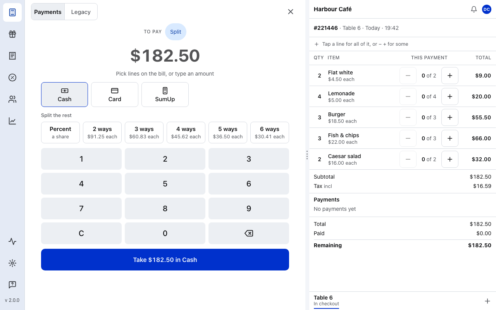
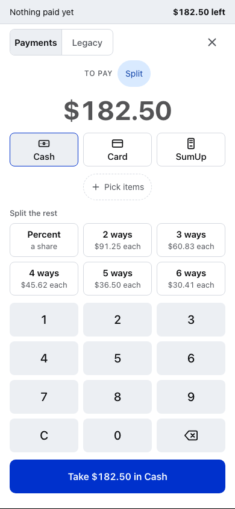
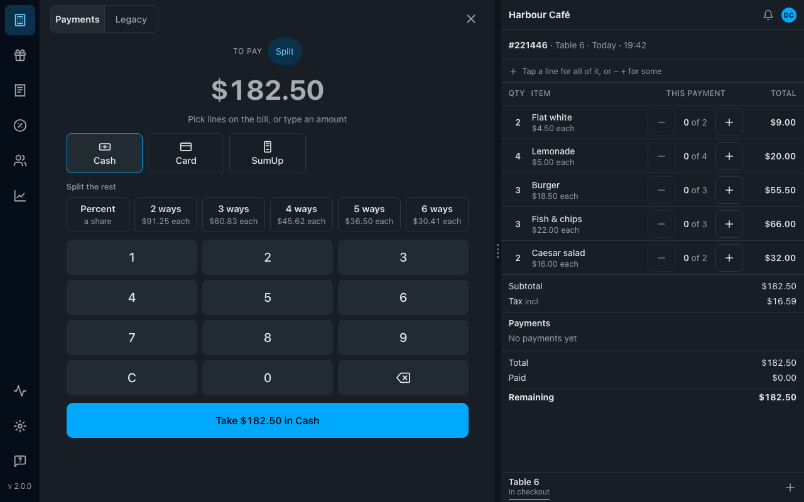
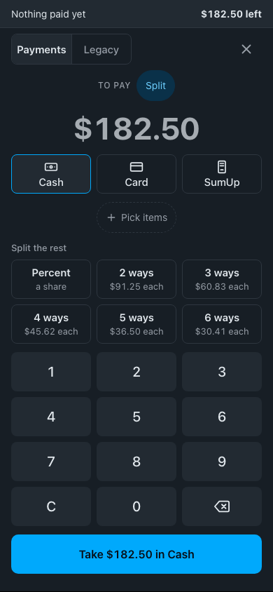
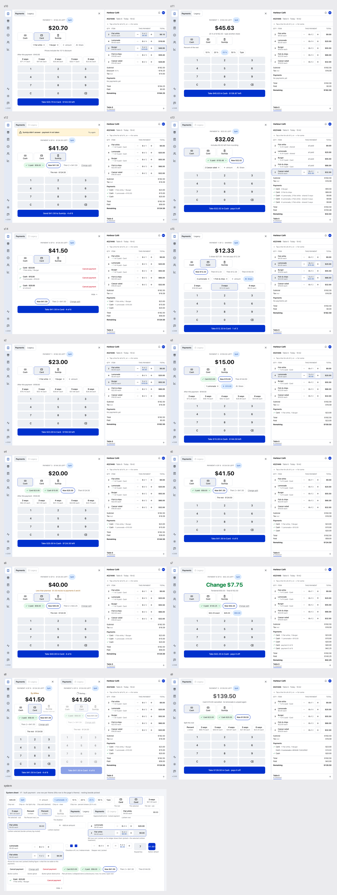
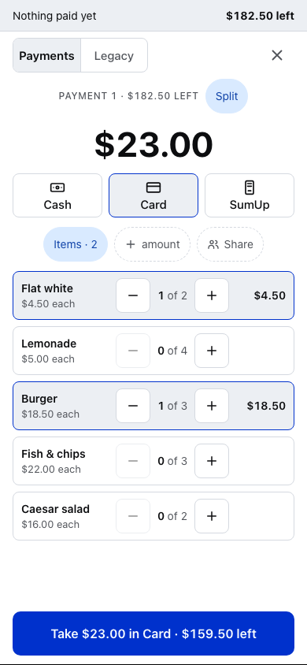
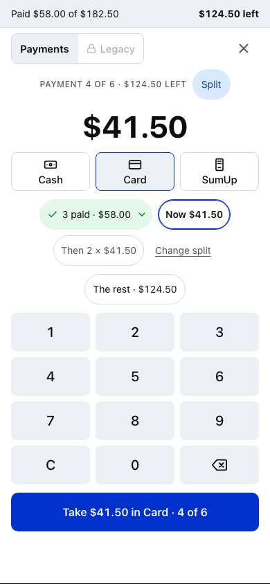
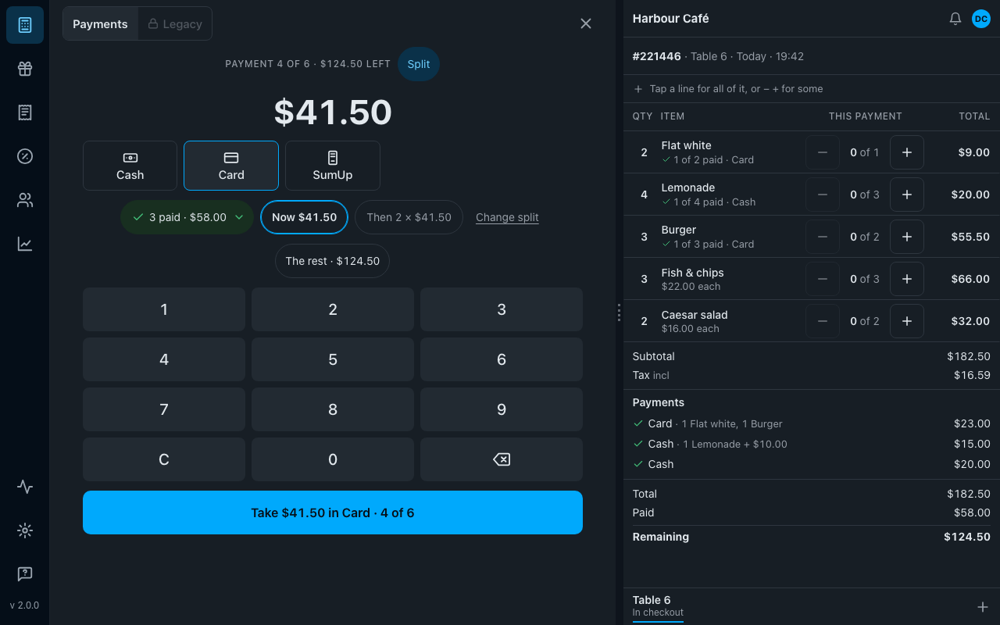
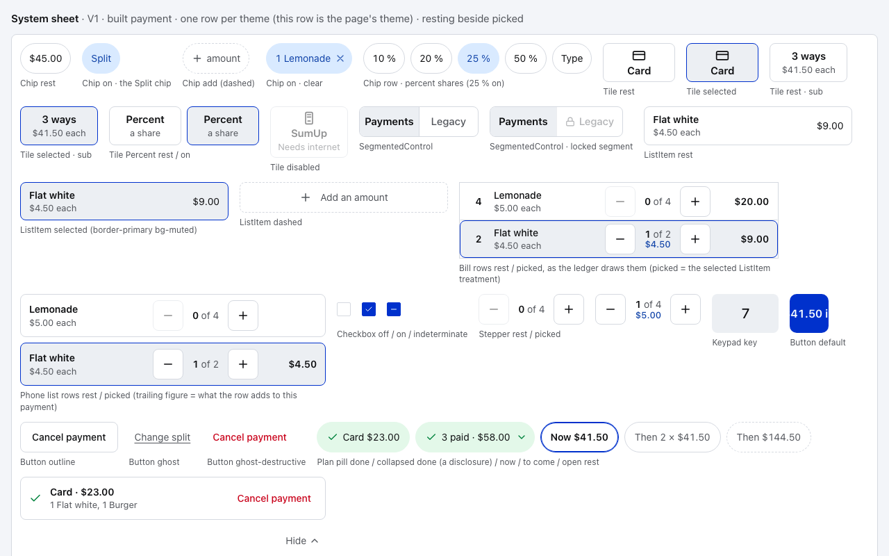
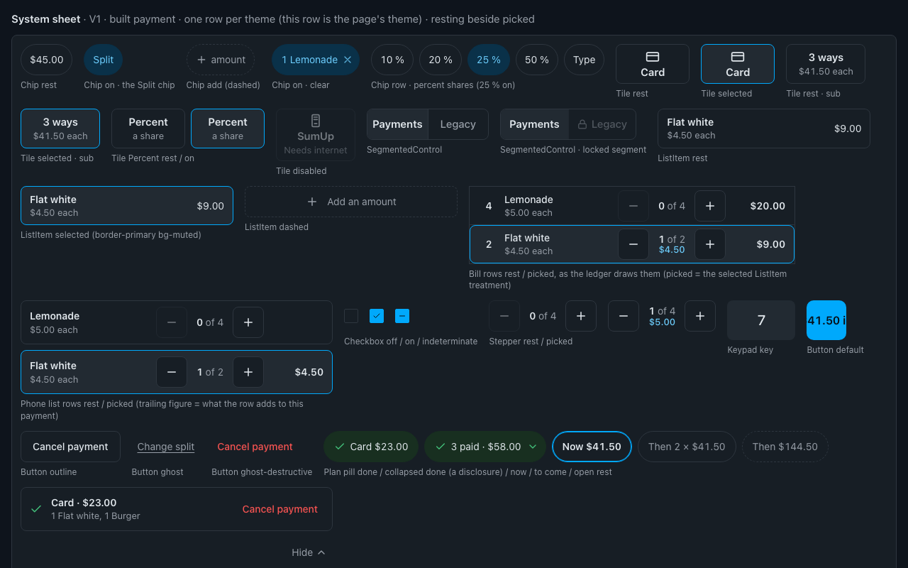
No token changes.
System sheet: system.html; the Split chip on reads the real Chip on-state (--selected / --selected-foreground), no token change. Its "bill rows rest / picked" sample is drawn with the ledger's own container and classes, so it is exactly what the bill draws.
There is no split sub-view. A split is a run of ordinary payments, and each one is built on the keypad pane from picked lines, a typed amount, a share (Percent), or an even split. The bill on the right is the item picker.
label row → hero (with its hint line) → method row → plan strip → helpers → keypad → commit.
Payment 2 · $159.50 left, or Payment 4 of 6 · $124.50 left with a plan.25 % of $182.50, Less than planned · …, Change $7.75, or Cash $15.00 cancelled · its lemonade is unpaid again.--ok-bg + check + method + amount), now (--primary border), to come (Then 2 × $41.50), open rest (dashed). With a plan, Change split (Button ghost) sits at the end. Never scrolls and never clips (round 2): where the done pills do not fit the width, they collapse into ONE pill, ✓ 3 paid · $58.00 (success wash). Whatever still does not fit wraps to a second line. On the tablet the six-pill strip collapses (s5–s8). At 390 and in the half-width s8 frames it collapses and wraps to two lines (see conflicts below). - Split on, no plan, nothing picked: Split the rest (round 4; was Split the rest evenly, which was wrong for a percentage) with a Percent tile (sub a share; round 4, was %) + 2 ways … 6 ways Tiles. Percent replaces the round-1 1 payment tile. Tapping it puts the keypad into percent entry: the tile is selected, the hint reads 25 % of $182.50, and the hero shows $45.63 (s11).
- An amount typed or lines picked (round 3): the caption reads After this payment · $124.50, and 2 ways … 6 ways divide that remainder. In s4, with $20 typed, the tiles read 3 ways · $41.50, not the $48.16 that split the $144.50 still owed before the payment. Tapping one plans this payment plus N equal payments in one visit (S9).
- Lines picked: the leg chips (1 Lemonade ×, + amount, Share (Chip add)). Share divides THIS payment between people (S8); the round-2 Share this payment tile row is gone, because the even row now plans the rest.
- Plan exists: The rest · $124.50, or with Cash the quick amounts / Exact.
- Phone: Pick items opens the line list in place of the keypad.
$4.50, $18.50, which add up to the hero's $23.00) and absent when unpicked: the unit price under the name and the stepper's 0 of 2 say enough. On the phone the stepper carries no amount sub, so the contribution is said once. A fully paid line has no stepper; its sub-line says 2 of 2 paid. The system sheet's phone-row sample draws exactly this.This payment column with the cart stepper (centre 1 of 2 + picked amount), and the line total always on the right. Picked row (round 2): the shared selected ListItem treatment, border-primary perimeter + bg-muted + tile radius, on the tablet bill and the phone list alike. The round-1 new: 3 px left edge is gone everywhere. Paid part: ✓ 1 of 2 paid · Card.Now / Then forecast rows are gone, so the strip is the only place for now / to come. A cancelled payment stays listed, struck through, with a muted Cancelled (s9).Discount 10 % line under Subtotal. Line prices are shown discounted ($4.05 each), and one muted line under the picked chips reads Prices include the 10 % discount.min-h-row gap-3 px-3 py-2, as the component. The round-1 rows had 2 px padding.SumUp didn't answer · payment 4 not taken, ghost Try again) at the top of the pane. The eyebrow, the strip, the SumUp tile (selected) and the bill (three payments, $58.00 paid) are unchanged.flex: 0 0 56px, at every width and in the s8 half frames; 16 px / 600, px-6): Take $23.00 in Card · $159.50 left, Take $41.50 in Card · 4 of 6, … · pays it off.| Retired | Replaced by |
|---|---|
| Split sub-view: ring, `Even / Amount / Percent / Item`, hint, `No split` | The even row in the helpers; Split chip off = no split |
| Item tab, `Pay for these`, `Pick next items` | Bill lines with the stepper (phone: `Pick items` list) |
| `or share these between 2 · 3 · 4` | The `Share` chip in the leg chips (round 3) |
| Amount tab | The keypad: a typed amount is a payment, and the rest stays open |
| Percent tab (its `10 · 20 · 25 · 30 · 50 · 75 %` tiles) | The `Percent` tile in the `Split the rest` row (round 2; named `Percent` in round 4); its share tiles are now the `10 % · 20 % · 25 % · 50 % · Type` chips that replace that row while `Percent` is on (post-climb) |
| `1 payment` tile (round 0/1) | Take with nothing picked and no plan (the hero is the rest); with a plan, `The rest · $x` |
| 3 px primary left edge on picked bill rows and the Payments `Now` row (round 1) | The selected ListItem treatment; bold text on the `Now` row |
| Cart `Split` link as the way to pay part of a line | The stepper on the bill (the cart link keeps its cart jobs) |
Percent on, the Split the rest row becomes Percent of the rest: the existing Chip in a row, 10 % · 20 % · 25 % · 50 % · Type, with 25 % on (--selected). The hint reads 25 % of $182.50 · type another share. While Type is on, the keypad types the share, with the % after the typed figure in the hint (e.g. 33 % of $182.50). Four 56 px key rows still fit above the commit at 390 and 1280. The chip row is on the system sheet beside the other chips.Change $7.75 in the success tone (AmountFigure tone="ok"), with one muted key-rank line under it: Tendered $50.00 · Total $182.50 (the total joins because the order is part-paid). The typed $50.00 is no longer the hero. Eyebrow, strip, Cash, the $50.00 helper, keypad and Take $42.25 in Cash · pays it off are unchanged.grid-template-rows: repeat(4, 56px); the keypad never shrinks), matching the system sheet's key sample. Every phone page shows all twelve keys above the commit, except the pages where a list takes the keypad's place (s2, s10 and s13 pick lists; s14, below).Pick items list does in s2, and the helpers row folds away; Hide brings both back. This conflicts with the round-5b ask that s14 keep four key rows; the alternative was shrinking keys, which is what this revert undoes.Share chip, on, names it), and on the phone the strip drops the open-rest pill (Then $145.50; the balance bar carries the open balance). Four 56 px key rows then fit above the commit at 390 and 1280.Pick items chip away (a different way to build the payment), so four 56 px key rows fit above the commit.$30.00. The generator now asserts that the lines sum to the total ($182.50, and $164.25 discounted). Subtotal, Paid and Remaining were re-checked on every frame.✓ 3 paid · $58.00 keeps the pill look with a small chevron at its end. Opened (s14), the done pills unfold in place into the recorded payments, one ListItem per payment (✓ Card · $23.00 / 1 Flat white, 1 Burger), each with the existing Cancel payment as a ghost-destructive action, and Hide (ghost) at the end. Now / to come and Change split stay a pill row under it, and the rest of the pane is unchanged. On the phone this is the way to reach Cancel payment, since the bill is not on screen.Share chip on. Under it, Share this payment with 2 ways · $18.50 each, 3 ways · $12.33 each (selected), 4 ways · $9.25 each. The eyebrow reads Payment 1 of 3 · shared, the hero $12.33, the hint 3 share $37.00 · the last pays $12.34, the strip Now $12.33 · Then $12.33 · Then $12.34 · Then $145.50, and the commit Take $12.33 in Card · 1 of 3.Split the rest with a Percent tile; the round-3 After this payment · $x caption rule still applies.$32.02, with the hint includes $0.02 left from rounding and Take $32.02 in Cash · pays it off; Remaining $32.02.After this payment · $124.50).✓ 3 paid · $58.00 + Now $41.50 + Then 2 × $41.50 + Change split measure about 470 px, so the strip wraps to two 44 px lines instead of clipping. No pill is cut.A leg is one payment. Its amount is defined one of these ways; a bill is any sequence of them.
| # | Leg kind | Example | What the cashier must be able to do |
|---|---|---|---|
| S1 | Whole bill, one payment | "I'll get it" | No split at all; never pass through the split view |
| S2 | Even, N ways, all at once | 4 friends, $45.62 each | Pick N; remainder cents land on the last leg; each leg any method |
| S3 | Fixed amount, then the rest | "$50 on my card, the rest cash" | Type or tap an amount; the rest is one more payment |
| S4 | Percent | "I'll cover 25 %" | Pick a share; same as S3 after that |
| S5 | Whole lines | "Just my burger" | Tap the line(s); the leg is their total; the line is marked paid afterwards |
| S6 | Part of a line (qty) | "1 of the 4 lemonades" | Pick how many of a multi-qty line WITHOUT leaving the tender pane. Rule: the cart stepper idiom (`− 1 +` with "of 4"), never per-unit dots |
| S7 | Items + an amount | "my drink, and put $10 towards the rest" | Combine S5/S6 with a typed top-up in ONE leg |
| S8 | Items shared by k people | "the three of us had the platter" | Items picked, then shared evenly k ways (today's `share these between`) |
| S9 | Fixed amount, then even N ways | "$20 off, then the three of us split" | Plan both without a second trip through Change split |
| S10 | Mixed sequence (Paul's case) | A: items, B: items + $10, C: $20, D–F: even | Each leg defined its own way, in any order; the screen shows what is done, what is now, what is left |
| S11 | The rest, one payment | after any plan | A single "the rest" leg is always one tap |
| S12 | Less than planned | the planned $41.50 leg, guest has $40 | The difference moves to the legs still to come; the plan re-balances, the screen says so |
| S13 | More than planned (cash) | $50 for a $41.50 leg | Change due, the leg is $41.50 |
| S14 | Change the split mid-way | one of the three leaves | Re-plan the remainder only; done legs never move |
| S15 | Cancel a taken leg | Guest A's card declined after record / wrong amount | Existing Cancel payment flow; the plan recounts |
| S16 | Everything paid by items, cents left | rounding leaves $0.02 | The last leg absorbs it; never a $0.02 payment to chase |
| S17 | Offline | no network | Same screens, `Offline` badge, online-only tiles disabled with reason |
| S18 | Terminal leg fails mid-split | SumUp times out on leg D | Existing terminal failure view; the plan is intact on return |
| S19 | Legacy (whole-order) gateway | Hidden/disabled once any payment is taken, with the one-line reason | |
| S20 | Order-level discount / fee / shipping with item legs | 10 % off the bill | Apportioned by line total; the line total shown is what the guest pays (state it once, never a paragraph) |
Worked order $182.50. "Split" is the chip beside the eyebrow. "+ Lemonade" is the + of that line's stepper on the bill (tablet) or in the Pick items list (phone). The chosen method stays selected from one payment to the next.
Take $182.50 in Card. Split is never touched.4 ways → Card → Take $45.62 in Card · 1 of 4 → Take ×3 (any method each). The last reads $45.64.Take $50.00 in Card · $132.50 left → Cash → Take $132.50 in Cash · pays it off. No Split needed.Percent → 2 5. The hero reads $45.63 with 25 % of $182.50 → Take $45.63 in Cash · $136.87 left → Take (the hero is the rest, $136.87).Burger (all 3, $55.50) → Take $55.50 in Card.1 of 4 · $5.00) → Take $5.00 in Cash · $177.50 left.+ amount → 1 0 → Take $15.00 in Cash · $167.50 left.Share (leg chip) → 3 ways. The eyebrow reads Payment 1 of 3 · shared, the hero $12.33, the hint 3 share $37.00 · the last pays $12.34 → Take $12.33 in Card · 1 of 3 → Take → Take ($12.34). The rest of the bill ($145.50) stays open.After this payment · $162.50 → 3 ways ($54.16, $54.16, $54.18) → Take $20.00 · 1 of 4 → Take ×3. Planned in one visit. - A (s2): Split, + Flat white, + Burger, Card, Take $23.00 in Card · $159.50 left (5 taps).
- B (s3): + Lemonade, + amount, 1 0, Cash, Take $15.00 in Cash · $144.50 left (6 taps).
- C (s4): 2 0. The row reads After this payment · $124.50, with 3 ways · $41.50 each → 3 ways → Take $20.00 in Cash · 3 of 6 (4 taps).
- D–F (s5): Card, Take $41.50 in Card · 4 of 6, Take, Cash, Take $41.50 in Cash · pays it off (5 taps).
- Still 20 taps in all; the plan is now set while C is on screen.
The rest · $x helper chip (one tap).Less than planned · $1.50 moves to payments 5 and 6, and the strip reads Then 2 × $42.25 → Take $40.00 in Card · 4 of 6.$50.00. The change leads: the figure reads Change $7.75 in the success tone, with Tendered $50.00 · Total $182.50 under it → Take $42.25 in Cash · pays it off. The payment records $42.25.Change split (end of the strip) → the even row returns over what is left → 2 ways. Done payments never move.✓ 3 paid · $58.00 pill, which unfolds into the recorded payments, each with Cancel payment (s14). Cancel B → the existing Cancel payment flow → s9: A and C stand and B stays listed, struck through and Cancelled. Its lemonade is back to 0 of 4. Paid $43.00, Remaining $139.50; the eyebrow reads Payment 3 · $139.50 left, the strip ✓ Card $23.00 · ✓ Cash $20.00 · Now $139.50 (phone: ✓ 2 paid · $43.00 · Now $139.50), the hero $139.50 with Cash $15.00 cancelled · its lemonade is unpaid again, Split the rest divides $139.50, and the commit reads Take $139.50 in Cash · pays it off.Caesar salad (2 of 2). The hero is the whole balance, $32.02, with includes $0.02 left from rounding → Take $32.02 in Cash · pays it off. No $0.02 payment to chase. Even splits put the odd cents on the last payment (182.50 / 4 → 45.62 ×3, 45.64).Offline badge, and SumUp is disabled with Needs internet. Everything else works.Send $41.50 to SumUp · 4 of 6 → no answer → back on the pane. A warning Notice reads SumUp didn't answer · payment 4 not taken with Try again. The eyebrow still reads Payment 4 of 6 · $124.50 left, the strip reads ✓ 3 paid · $58.00 · Now $41.50 · Then 2 × $41.50, SumUp stays selected, and the bill still shows three payments / $58.00 paid. Try again re-sends; another method tile + Take takes it another way.Discount 10 % under Subtotal, and every line price is the discounted one ($4.05 each). Split → + Flat white, + Burger = $20.70, with one muted line Prices include the 10 % discount → Take $20.70 in Card · $143.55 left.Worked order $182.50. "Split" opens the sub-view on the Even tab. Every tab has the method row and a Take commit, so a payment is taken where it is defined. Change split (end of the strip on the keypad pane) reopens the sub-view.
Take $182.50 in Card. The sub-view is never opened.4 ways → Card → Take $45.62 in Card · 1 of 4 → (keypad pane) Take ×3 (any method each). The last is $45.64.$50 → 1 payment → Card → Take $50.00 in Card · 1 of 2 → Cash → Take.25 % → 1 payment → Take $45.63 in Card · 1 of 2 → Take.Burger (all 3) → Take $55.50 in Card · $127.00 left.1 of 4 / $5.00) → Take $5.00 in Cash · $177.50 left.Add an amount → $10 → Cash → Take $15.00 in Cash · $144.50 left (A done). Other amounts: Type.Share these · 3 ways → Take ×3.$20 → 3 ways → Take $20.00 in Cash · 3 of 6 → Take ×3. One visit. - A (s2): Split, Item, + Flat white, + Burger, Card, Take $23.00 in Card · $159.50 left (6 taps).
- B (s3): Change split, Item, + Lemonade, Add an amount, $10, Cash, Take $15.00 in Cash · $144.50 left (7 taps).
- C–F (s4, s5): Change split, Amount, $20, 3 ways, Take $20.00 in Cash · 3 of 6, Card, Take $41.50 in Card · 4 of 6, Take, Cash, Take $41.50 in Cash · pays it off (10 taps).
The rest · $x chip on the keypad pane (one tap), or 1 payment in a Then-split row.Less than planned · $1.50 moves to the next 2 payments, and the strip reads Then 2 × $42.25.$50.00 → Change $7.75 → Take $42.25 in Cash · pays it off.2 ways. It re-plans what is left; done legs keep their checks.Cancelled. Its lemonade is unpaid again (1 of 4 paid is gone from the line). The eyebrow reads Payment 2 · $159.50 left, the strip keeps A done with Now $159.50, and Paid / Remaining recount to $23.00 / $159.50.Offline badge, and SumUp is disabled with Needs internet. All tabs work.Send $41.50 to SumUp · 4 of 6 → no answer → back on the keypad pane. A warning Notice reads SumUp didn't answer · payment 4 not taken with Try again. The eyebrow still reads Payment 4 of 6 · $124.50 left, the strip reads ✓ 3 paid · $58.00 · Now $41.50 · Then 2 × $41.50, SumUp stays selected, and the bill still shows three payments / $58.00 paid.Discount 10 % under Subtotal. The Item tab's line prices are discounted ($4.05 each), and the hero's hint reads Prices include the 10 % discount. + Flat white, + Burger = $20.70 → Take $20.70 in Card · $143.55 left.Worked order $182.50. Split opens guest mode with 2 guests and Guest 1 selected. After a guest is paid in full, the next unpaid guest is selected. "+ Lemonade" is the + of that line's stepper on the bill (tablet) or in the Pick items list (phone), and it gives the unit to the selected guest.
Take $182.50 in Card. Split is never touched.+ + (4 guests: $45.62 ×3, Guest 4 $45.64) → Card → Take $45.62 in Card · Guest 1 of 4 → Take ×3 (any method each).Take $132.50 in Cash · pays it off. Inside a split it is one guest with two takes: Guest 1 (share $91.25) types 5 0 → Card → Take $50.00 in Card · Guest 1 of 2 → Guest 1 stays selected with $41.25 still to pay → Cash → Take.+ + (4) → Take $45.62 · Guest 1 of 4 → − − (2 guests) → Guest 2 = $136.88 → Take.Burger (all 3 to Guest 1) → Take $55.50 · Guest 1 of 2.Take $5.00 in Cash · Guest 1 of 2.+ amount → 1 0 → Take $15.00 · Guest 1 of 2.+ amount.+ + (4) → 2 0 on Guest 1. Guests 2–4 read $54.16, $54.16, $54.18 → Take ×4. One visit. - Count: Split, + ×4 (6 guests) (5 taps).
- Guest 1: + Flat white, + Burger ($23.00) (2 taps).
- Guest 2: tap Guest 2, + Lemonade, + amount, 1 0 ($15.00) (5 taps).
- Guest 3: tap Guest 3, 2 0 ($20.00) (3 taps). Guests 4–6 read $41.50 by themselves.
- Take: tap Guest 1, Card, Take, then Cash, Take (Guest 2), Take (Guest 3), Card, Take (Guest 4), Take (Guest 5), Cash, Take $41.50 in Cash · pays it off (10 taps).
- On the phone, picking shows the collapsed chooser (Guest 2 · $15.00 ‹ › − 6 +), and › steps to the next guest.
− until one unpaid guest is left (k − 1 taps), then Take.Guest 4 pays $1.50 later (default, Guest 4 stays open with $1.50 still to pay) or Move $1.50 to Guests 5 and 6 (they read $42.25). Then Take $40.00 · Guest 4 of 6.Change $7.75 → Take $42.25 in Cash · pays it off.− (5 guests). The unpaid guests re-share; paid guests never change.Offline badge, and SumUp is disabled with Needs internet (s8.html, left).Split opened: the four-tab sub-view with a ring → the bill is the picker, the keypad pane stays
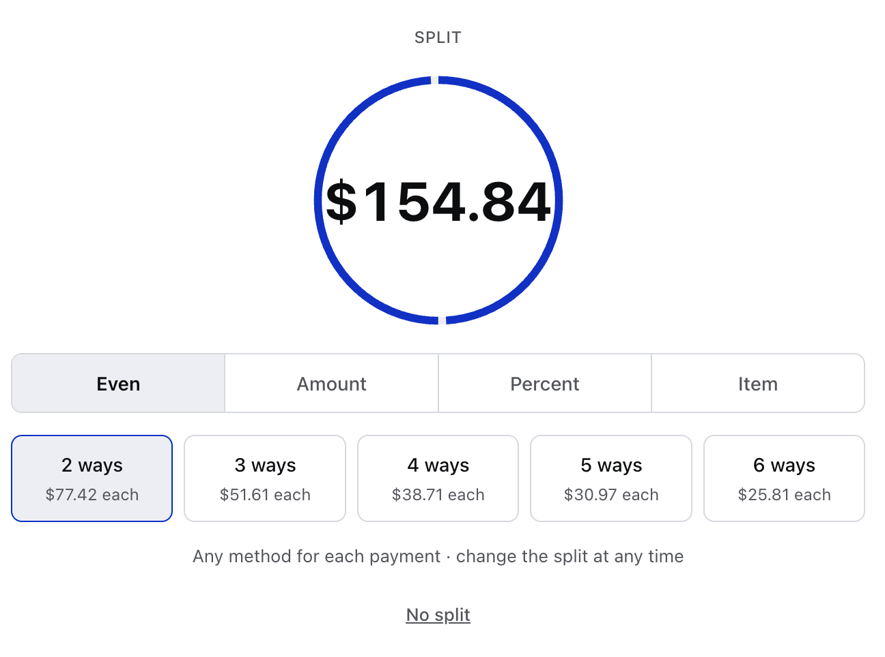
One plan for the whole bill → every payment defined its own way (items, part of a line, items + amount, fixed, percent, the rest N ways)
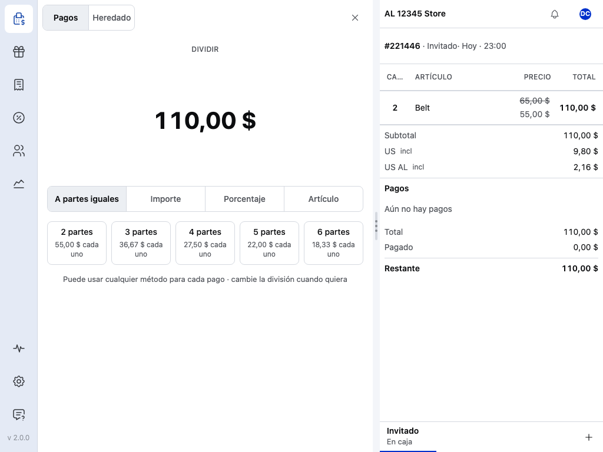
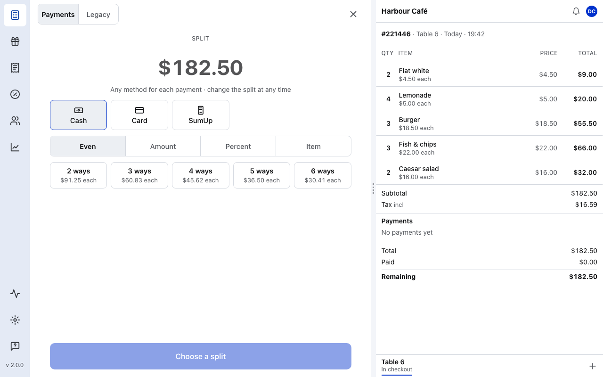
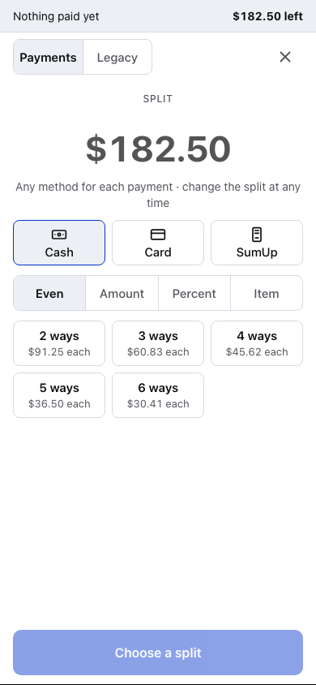
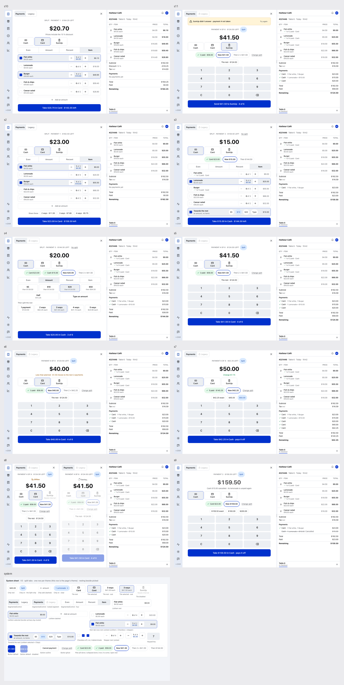
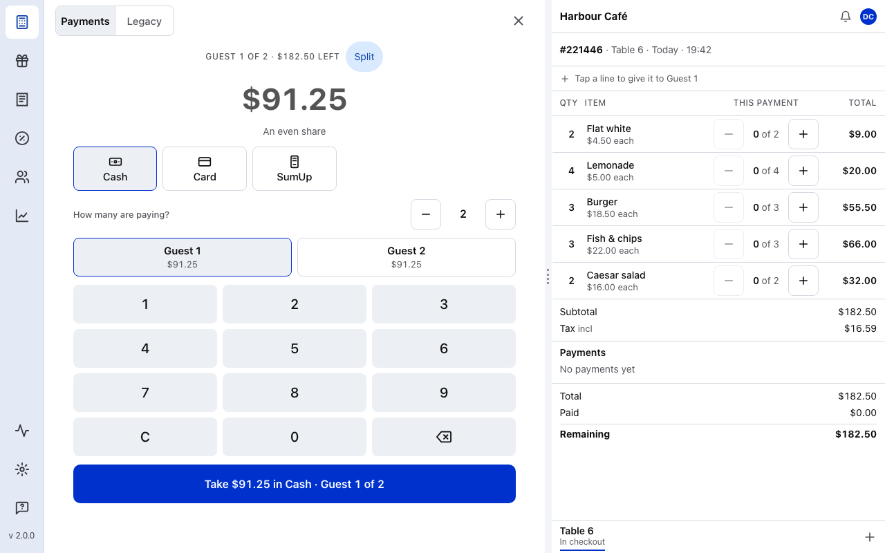
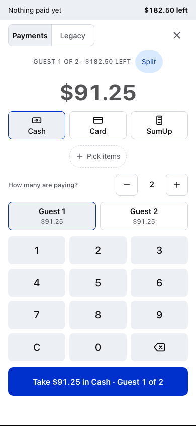
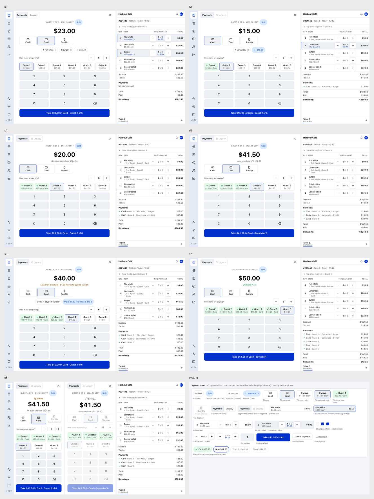
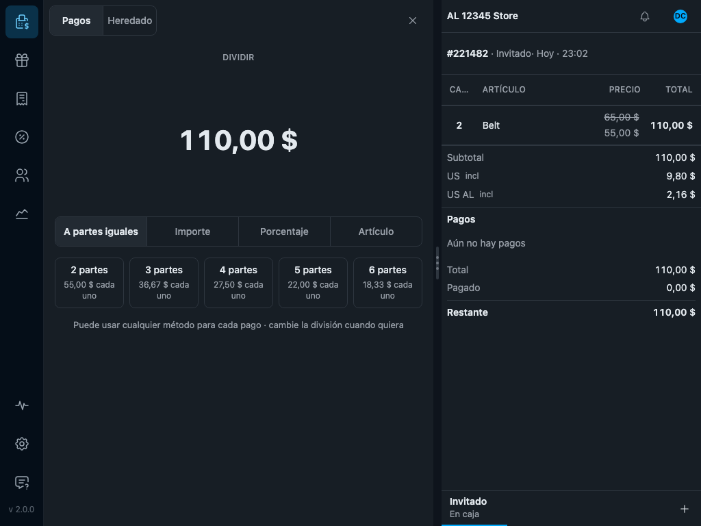
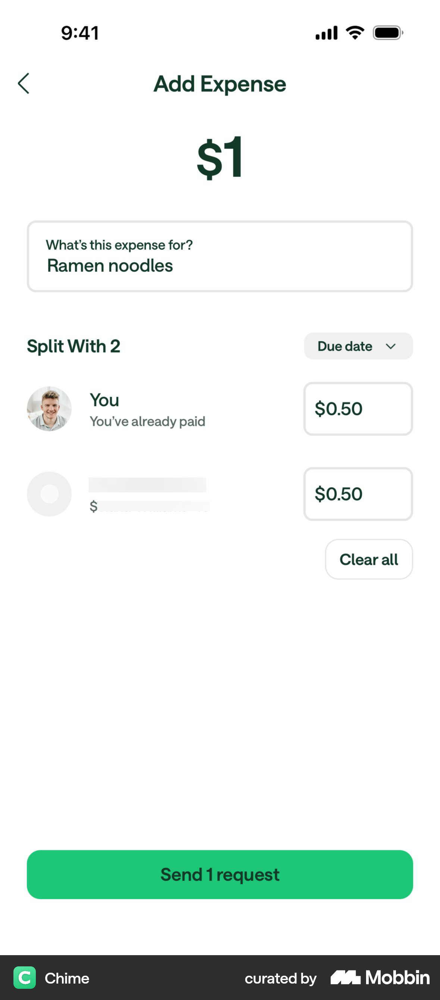
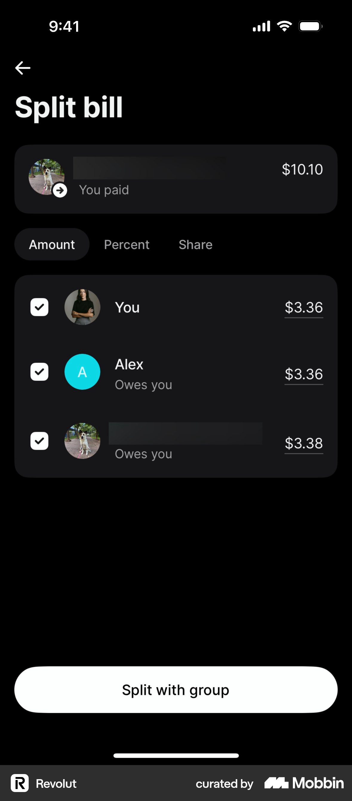
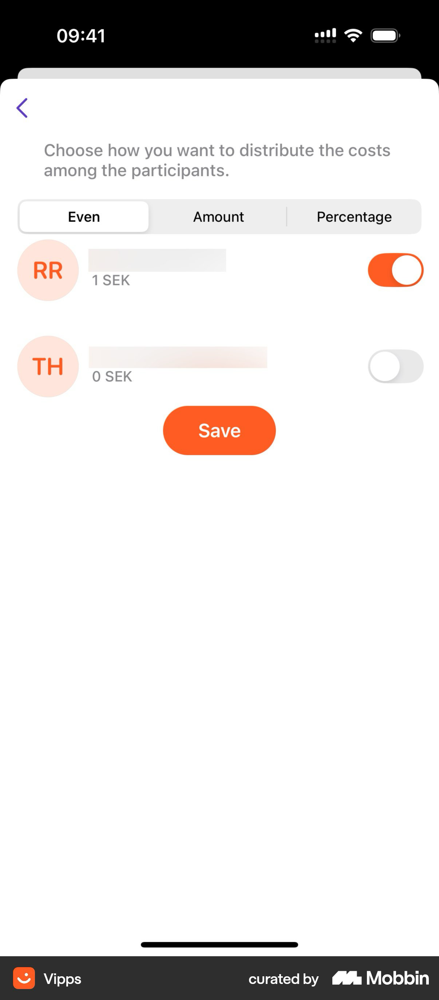
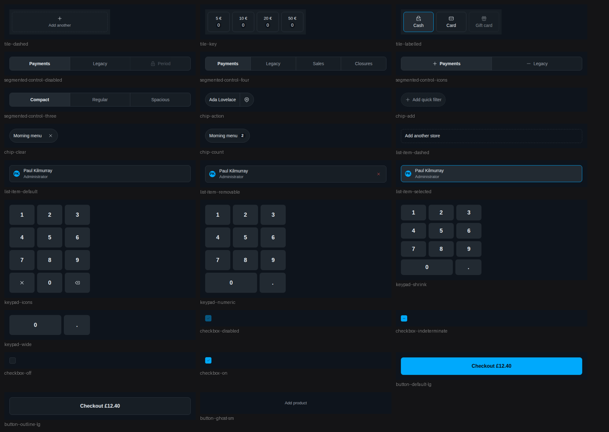
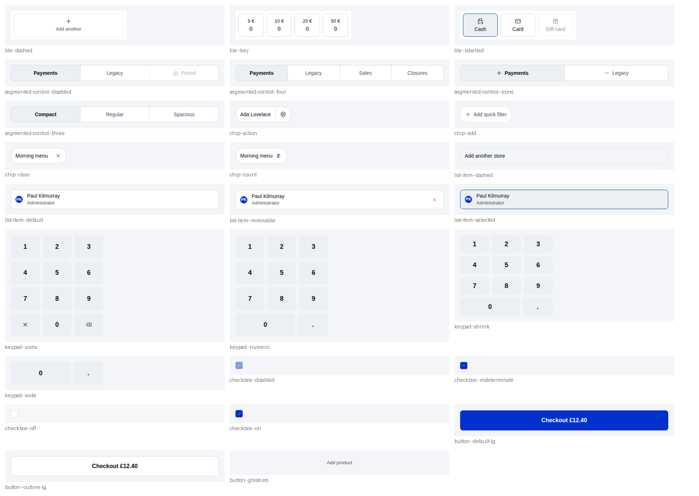
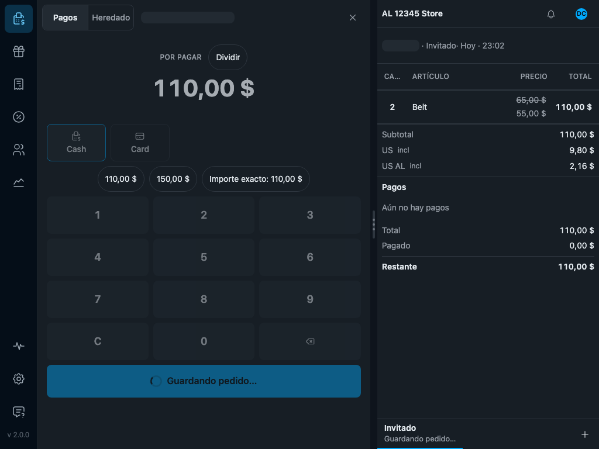
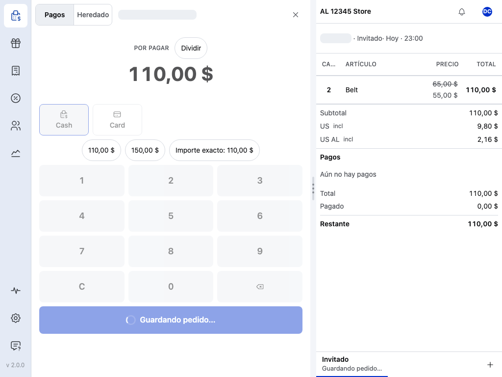
Anchors (shot once, never changed): anchors/baseline-split-open-tablet-{light,dark}.png (the real register frame with the split open), anchors/baseline-split-even-desktop-light.png (Paul's screenshot), anchors/system-real-tender-keypad-tablet-{light,dark}.png, anchors/system-gallery-{light,dark}.png, anchors/ref-{chime,revolut,vipps}-*.png.
Judges: Codex GPT-6.1 Sol (every round), Opus (joins when Sol has every category ≥ 9.0), Fable (the confirming round only). Each judge gets JUDGE.md verbatim, the round's shots, the anchors and (from round 1) round 0's shots as the baseline; never a previous score or another judge's output.
SYSTEM BREAK (Sol): v1, v2, v3 — no system sheet; the Split chip's on fill (--selected) is unjudged against its siblings. → every variant renders variants/vN/system.html in round 1.
| Category | v1 | v2 | v3 | Baseline | Revolut | Splitwise | Vipps | System gallery | System tender |
|---|---|---|---|---|---|---|---|---|---|
| Hierarchy | 7.5 | 7 | 6.5 | 7.5 | 8 | 7 | 7.5 | 6.5 | 7.5 |
| Typography | 7 | 7 | 6.5 | 8 | 8.5 | 8 | 8 | 5.5 | 7.5 |
| Spacing and alignment | 7 | 6.5 | 6.5 | 7.5 | 8 | 7.5 | 8 | 7 | 7.5 |
| Colour and contrast — light | 7.5 | 7.5 | 7.5 | 8 | — | 8 | 8 | 7.5 | 7.5 |
| Colour and contrast — dark | 7 | 7 | 7.5 | 7.5 | 8.5 | — | — | 7.5 | 7 |
| Iconography and indicators | 7 | 7.5 | 6.5 | 6.5 | 8 | 7 | 7 | 7.5 | 7.5 |
| Consistency | 5 | 5 | 5 | 9 | 4.5 | 4.5 | 4.5 | 9 | 9 |
| Clarity for the cashier | 6 | 5.5 | 6 | 5.5 | 5 | 4.5 | 5 | 2 | 5 |
| Density | 5.5 | 5 | 6.5 | 5.5 | 5.5 | 5 | 5.5 | 4 | 6 |
| States covered | 5.5 | 5.5 | 6 | 2.5 | 2 | 1.5 | 1.5 | 1 | 2 |
| Average | 6.5 | 6.4 | 6.5 | 6.8 | 6.4 | 5.9 | 6.1 | 5.8 | 6.7 |
No pick in round 0. Every variant carries a SYSTEM BREAK and sits under the baseline in Typography, Spacing and Consistency, so none may be picked or climbed yet. Round 1 fixes the break (system sheets), applies Sol's nine findings, and matches the baseline's type scale; the pick is made on round 1's columns.
Orchestrator's reading of Sol's v3 finding 1 (plan strip between the amount and the method row breaks the ruled order): the live keypad pane already draws the plan pills under the amount and above the method tiles (tender-pane.tsx, checkout-plan before the method TileGrid), and the ruling's words are "method selector directly under the amount, with helpers changing with it". A ONE-LINE plan status is part of the amount block; a tall block of history is not. Round 1 keeps the strip to one compact row directly under the amount, the method row immediately after.
SYSTEM BREAK (Sol): V1, V2 — the system sheet's "picked bill row" sample reads a neutral outline, not the primary edge its caption claims (a drawing defect in the sheet; the subject pages draw the edge). V3: none.
| Category | Baseline | Revolut | Splitwise | Vipps | System gallery | System tender | R0 V1 | R0 V2 | R0 V3 | V1 | V2 | V3 |
|---|---|---|---|---|---|---|---|---|---|---|---|---|
| Hierarchy | 7.5 | 8 | 8 | 7.5 | 6.5 | 8 | 8 | 8 | 7 | 8 | 8 | 8 |
| Typography | 8 | 8.5 | 8 | 8 | 6 | 8 | 7.5 | 7.5 | 7 | 8 | 8 | 8 |
| Spacing and alignment | 7.5 | 8 | 7.5 | 7.5 | 7 | 8 | 7 | 6.5 | 7 | 7.5 | 7 | 8 |
| Colour and contrast — light | 8 | — | 8 | 7.5 | 7.5 | 7.5 | 8 | 8 | 8 | 8 | 8 | 8 |
| Colour and contrast — dark | 7.5 | 8.5 | — | — | 7 | 7.5 | 7.5 | 7.5 | 7.5 | 8 | 8 | 8 |
| Iconography and indicators | 7.5 | 8 | 7.5 | 7.5 | 8 | 7.5 | 7 | 7.5 | 6.5 | 7 | 7.5 | 6.5 |
| Consistency | 8.5 | 8 | 8 | 8 | 9 | 9 | 5 | 5 | 5 | 5 | 5 | 8 |
| Clarity for the cashier | 5.5 | 6.5 | 6 | 5.5 | 5 | 6 | 6.5 | 7 | 6.5 | 7 | 7.5 | 7.5 |
| Density | 7 | 7.5 | 6.5 | 6.5 | 7 | 7.5 | 7 | 6 | 7.5 | 7.5 | 7 | 8 |
| States covered | 2.5 | 1.5 | 1.5 | 1.5 | 1.5 | 2 | 6 | 6 | 6 | 6.5 | 6 | 7 |
| Average | 6.95 | 7.17 | 6.78 | 6.61 | 6.45 | 7.10 | 6.95 | 6.90 | 6.80 | 7.25 | 7.20 | 7.70 |
Decision after round 1: V2 dropped; V1 and V3 go to round 2; the pick is made on round 2's columns.
✓ 3 paid pill when the row overflows.% tile in the even row (the keypad then types a percent and the hero shows the amount with 25 % of $182.50 under it), so S4 is no longer a detour; its picked bill row drops the new: 3 px edge and reads the shared selected ListItem treatment instead.SYSTEM BREAK (Sol): none on the round 2 sets (the r0 sets carry historical breaks only).
| Category | r2 V1 | r2 V3 | r0 V1 | r0 V2 | r0 V3 | Baseline | Revolut | Splitwise | Vipps | System gallery | System tender |
|---|---|---|---|---|---|---|---|---|---|---|---|
| Hierarchy | 7.5 | 8 | 7 | 7 | 7 | 6.5 | 8.5 | 8 | 7 | 7 | 8 |
| Typography | 8 | 8 | 7.5 | 7.5 | 7.5 | 7 | 8.5 | 8 | 7.5 | 6.5 | 7.5 |
| Spacing and alignment | 5 | 6 | 7 | 6.5 | 7 | 6.5 | 8 | 7.5 | 7 | 7 | 8 |
| Colour and contrast — light | 8.5 | 8.5 | 8.5 | 8.5 | 8.5 | 8.5 | — | 8 | 8 | 8 | 8 |
| Colour and contrast — dark | 8 | 8 | 8 | 8 | 8 | 8 | 8.5 | — | — | 8 | 7.5 |
| Iconography and indicators | 8 | 8 | 7.5 | 7.5 | 7.5 | 7 | 8.5 | 7.5 | 7.5 | 8 | 7.5 |
| Consistency | 8.5 | 8.5 | 5 | 5 | 5 | 8 | 8.5 | 8 | 8 | 9 | 8.5 |
| Clarity for the cashier | 6 | 6.5 | 6 | 5.5 | 6 | 5 | 3.5 | 3 | 3 | 3 | 6.5 |
| Density | 6.5 | 6.5 | 6.5 | 5.5 | 6.5 | 5 | 6 | 5.5 | 5 | 7 | 7.5 |
| States covered | 7 | 6.5 | 6 | 6 | 6 | 2 | 1.5 | 1.5 | 1.5 | 1.5 | 2 |
| Average | 7.30 | 7.45 | 6.90 | 6.70 | 6.90 | 6.35 | 6.83 | 6.33 | 6.06 | 6.50 | 7.10 |
No pick in round 2, for one shared defect. Both variants sit under the baseline in Spacing and alignment only, and for the same reason: round 2's layout change broke the phone footer (the commit button shrinks to a hairline on the dark entry page and is cut off at x≈255 in the item state). Every other column is at or above the baseline for both. Round 3 fixes the footer on both, applies the judge's remaining findings, and the pick is made on round 3's columns. Orchestrator's leaning, recorded before round 3 so the pick is not post-hoc: V1 (fewest taps on Paul's table, the bill is the picker, no sub-view), with V3 the safer evolution of the 2026-09-11 approved pane; if round 3 leaves them tied on columns, the question goes to Paul with V1 recommended.
SYSTEM BREAK (Sol): V3 — the system sheet's Item rows read ≈62 px with padded steppers while the phone Item rows read ≈44 px with the steppers flush to the border. V1: none.
| Category | r3 V1 | r3 V3 | r0 V1 | r0 V2 | r0 V3 | Baseline | Chime | Revolut | Vipps | System gallery | Real tender |
|---|---|---|---|---|---|---|---|---|---|---|---|
| Hierarchy | 8 | 8.5 | 7.5 | 7.5 | 7.5 | 7 | 8.5 | 8.5 | 7 | 6.5 | 8 |
| Typography | 8 | 8 | 7.5 | 7.5 | 7.5 | 7.5 | 8 | 8.5 | 7.5 | 5.5 | 8 |
| Spacing and alignment | 7.5 | 6.5 | 7 | 7 | 7 | 7.5 | 8.5 | 8 | 7.5 | 7 | 8 |
| Colour and contrast — light | 8.5 | 8.5 | 8 | 8 | 8.5 | 8 | 8 | — | 7.5 | 7.5 | 8 |
| Colour and contrast — dark | 8 | 8 | 7.5 | 7.5 | 8 | 8 | — | 8.5 | — | 7.5 | 7.5 |
| Iconography and indicators | 8 | 7.5 | 7 | 7.5 | 7 | 7.5 | 8 | 8.5 | 7.5 | 7.5 | 7 |
| Consistency | 8.5 | 5 | 8 | 8 | 8 | 8.5 | 7.5 | 7.5 | 7.5 | 8.5 | 9 |
| Clarity for the cashier | 7 | 7.5 | 6.5 | 6.5 | 6.5 | 5 | 3 | 4 | 3.5 | 4.5 | 6.5 |
| Density | 7 | 8 | 6.5 | 6 | 7.5 | 6.5 | 7 | 7.5 | 6 | 6.5 | 8 |
| States covered | 7 | 7 | 6 | 6 | 6 | 3 | 1.5 | 1.5 | 1.5 | 2.5 | 2.5 |
| Average | 7.75 | 7.45 | 7.15 | 7.15 | 7.35 | 6.85 | 6.67 | 6.94 | 6.17 | 6.35 | 7.25 |
Pick: V1 ("the payment is built, not planned"). Columns first: V1 is at or above the baseline in every category and carries no SYSTEM BREAK; V3 carries a SYSTEM BREAK (phone Item rows 44 px against the sheet's 62 px) and sits under the baseline in Spacing. The pick agrees with the leaning recorded after round 2. From round 4 only V1 is climbed; V3 is kept as a rejected variant at its round 3 state.
Round 4 brief for V1 (Sol's three findings, with one taste call): the phone pick-list's trailing figure becomes the row's contribution to this payment (bold when picked, nothing when unpicked; unit price stays under the name) so the row amounts reconcile with the hero; the tablet ledger keeps its TOTAL column (it is the bill) and the contribution in the stepper cell. The even row's heading becomes Split the rest and the % tile reads Percent · a share. A new frame shows S16 (the last items picked, two residual cents absorbed into that payment).
SYSTEM BREAK (Sol): none on the round 4 set (the r0 sets carry their historical breaks).
| Category | V1 r4 | V1 system sheet | V1 r0 | V2 r0 | V3 r0 | Baseline | Chime | Revolut | Vipps | System gallery | Real tender |
|---|---|---|---|---|---|---|---|---|---|---|---|
| Hierarchy | 8.5 | 7.5 | 8 | 7.5 | 7.5 | 7 | 8.5 | 8 | 7.5 | 7 | 7.5 |
| Typography | 8.5 | 8 | 8 | 8 | 8 | 8 | 8.5 | 8.5 | 8 | 6.5 | 8 |
| Spacing and alignment | 7.5 | 6.5 | 7 | 6.5 | 7 | 7.5 | 8 | 8 | 7.5 | 7.5 | 8 |
| Colour and contrast — light | 8 | 8 | 8 | 8 | 8 | 8 | 8.5 | — | 8 | 7.5 | 7 |
| Colour and contrast — dark | 8 | 8 | 8 | 8 | 8 | 8 | — | 8 | — | 7.5 | 7 |
| Iconography and indicators | 8 | 8 | 7.5 | 7.5 | 7.5 | 7.5 | 8 | 8.5 | 8 | 8 | 8 |
| Consistency | 8.5 | 8.5 | 5 | 5 | 7 | 8.5 | 8 | 8 | 8 | 9 | 9 |
| Clarity for the cashier | 7.5 | 5 | 6.5 | 7 | 6.5 | 5 | 4.5 | 5.5 | 4.5 | 3.5 | 6 |
| Density | 8 | 6.5 | 7.5 | 6 | 6.5 | 5.5 | 5 | 6 | 5 | 6 | 7 |
| States covered | 7.5 | 3 | 6 | 6 | 6 | 2 | 1.5 | 2 | 1.5 | 2 | 2.5 |
| Average | 8.00 | 6.90 | 7.15 | 6.95 | 7.20 | 6.70 | 6.72 | 6.94 | 6.44 | 6.45 | 7.00 |
Five categories rose against round 3 (Hierarchy, Typography, Clarity, Density, States), none fell. No category has reached 9.0, so Opus does not join yet. Round 5 is the cap: Sol's three findings are applied (the collapsed ✓ 3 paid pill becomes a disclosure with its expanded state drawn; the phone method and split tiles go to two fixed columns with the content above the pinned commit scrolling; a Share frame shows the people count and the per-person amount), then the climb stops at the cap whatever the table says.
SYSTEM BREAK (Sol): V1 — keypad keys read 44 px on the entry phone page against 56 px on the system sheet and in s5 (round 5's two-column phone grid pushed the keypad under the pinned commit and shrank the keys).
| Category | R5 V1 | R0 V1 | R0 V2 | R0 V3 | Baseline | Chime | Revolut | Vipps | System gallery | System tender |
|---|---|---|---|---|---|---|---|---|---|---|
| Hierarchy | 8 | 8 | 7.5 | 7 | 7 | 8.5 | 8.5 | 7 | 6.5 | 8 |
| Typography | 8 | 7.5 | 7.5 | 7.5 | 7.5 | 8 | 8 | 7.5 | 6 | 7.5 |
| Spacing and alignment | 6 | 7.5 | 7 | 7 | 7.5 | 8 | 8 | 7 | 7 | 7.5 |
| Colour and contrast — light | 8.5 | 8.5 | 8.5 | 8.5 | 8.5 | 8.5 | — | 7.5 | 8 | 7 |
| Colour and contrast — dark | 8 | 8 | 8 | 8 | 8 | — | 8.5 | — | 7.5 | 6.5 |
| Iconography and indicators | 8 | 7.5 | 8 | 7.5 | 6.5 | 7.5 | 8 | 6.5 | 7.5 | 7 |
| Consistency | 5 | 7 | 7 | 7 | 8 | 8 | 8 | 7.5 | 9 | 9 |
| Clarity for the cashier | 7 | 6.5 | 6.5 | 6 | 5 | 4.5 | 5 | 4.5 | 3.5 | 6 |
| Density | 6 | 7.5 | 6.5 | 7 | 5 | 5.5 | 6 | 5.5 | 6.5 | 7 |
| States covered | 8 | 6 | 6 | 6.5 | 2.5 | 1 | 1 | 1 | 1 | 2.5 |
| Average | 7.25 | 7.40 | 7.25 | 7.20 | 6.55 | 6.61 | 6.78 | 6.00 | 6.25 | 6.80 |
Spacing (7.5 → 6), Consistency (8.5 → 5) and Density (8 → 6) fell, all from one change: round 4's finding asked for two-column phone tiles; applied, it pushed the keypad under the commit and shrank the keys, which the same judge then scored down. Per the rule, the change is reverted (round 5b: round 4's phone layout restored; s14 and s15 kept), and one real defect the judge found is fixed (Caesar salad's line total read $30.00 for 2 × $16.00). The percent-choices finding (s11) is not taken: the cap is reached, and it would be new work. Round 5b is a revert-and-confirm, not a climb round; the climb stops after it whatever the table says.
SYSTEM BREAK (Sol): none on the round 5b set.
| Category | r5b V1 | V1 system sheet | r0 V1 | r0 V2 | r0 V3 | Baseline | Chime | Revolut | Vipps | System gallery | System tender |
|---|---|---|---|---|---|---|---|---|---|---|---|
| Hierarchy | 8.5 | 7.5 | 8 | 8 | 7 | 7 | 8.5 | 8.5 | 7 | 7.5 | 8 |
| Typography | 8.5 | 8.5 | 8 | 8 | 8 | 8 | 8.5 | 8 | 7.5 | 7 | 8 |
| Spacing and alignment | 7 | 7 | 8 | 7 | 7.5 | 8 | 8 | 8 | 7.5 | 8 | 8 |
| Colour and contrast — light | 8.5 | 8.5 | 8.5 | 8.5 | 8.5 | 8.5 | 8.5 | — | 7 | 8 | 7.5 |
| Colour and contrast — dark | 8 | 8 | 8 | 8 | 8.5 | 8 | — | 8.5 | — | 8 | 7 |
| Iconography and indicators | 8 | 8 | 7.5 | 8 | 8 | 8 | 8 | 8 | 6.5 | 8.5 | 7.5 |
| Consistency | 9 | 9 | 5 | 5 | 8 | 8.5 | 7.5 | 7.5 | 7.5 | 9 | 9 |
| Clarity for the cashier | 7.5 | 5 | 7 | 7 | 6.5 | 5.5 | 5.5 | 6 | 5.5 | 4.5 | 7 |
| Density | 8 | 7.5 | 7.5 | 7 | 7 | 6 | 6.5 | 7.5 | 6 | 7.5 | 8 |
| States covered | 8.5 | 2.5 | 6.5 | 5.5 | 6.5 | 2.5 | 2 | 2.5 | 2 | 1.5 | 2 |
| Average | 8.15 | 7.15 | 7.40 | 7.20 | 7.55 | 7.00 | 7.00 | 7.17 | 6.28 | 6.95 | 7.20 |
Stop: round cap reached (5 rounds plus the revert). The revert closed the break (Consistency 9, no SYSTEM BREAK) and restored the fallen categories (Spacing 6 → 7, Density 6 → 8); the delivered state is round 5b (average 8.15, the climb's best). No category reached 9.0 in two consecutive rounds, so Opus never joined and Fable did not judge; the tables above are Sol's alone, and the stop is the cap, not the bar.
Not applied, with reason: Sol's round 5b finding 1 asks again for two-column phone tiles, the change Sol asked for in round 4, scored down in round 5 (keys shrank, keypad under the commit) and this revert undid; the real pane's phone ? 2 : 5 rule is a build-time question for the method grid, not a mockup change. Finding 2 (Items · 2 chip should read Back to keypad) and finding 3 (Whole bill only under the locked Legacy segment) are good and small; they go into the build spec as copy, not another round. The salad-total finding of round 5 was a misread: no page carries $30.00.
rounds/finalTwo frames changed after the cap, shot into rounds/final without a judge: s11 gained the percent chips the last round asked for (10 % · 20 % · 25 % · 50 % · Type under Percent of the rest), and s7 leads with the change (Change $7.75 in the success tone, Tendered $50.00 · Total $182.50 under it) to match monorepo #3393, merged on main while the climb ran. index.html is built from rounds/final.